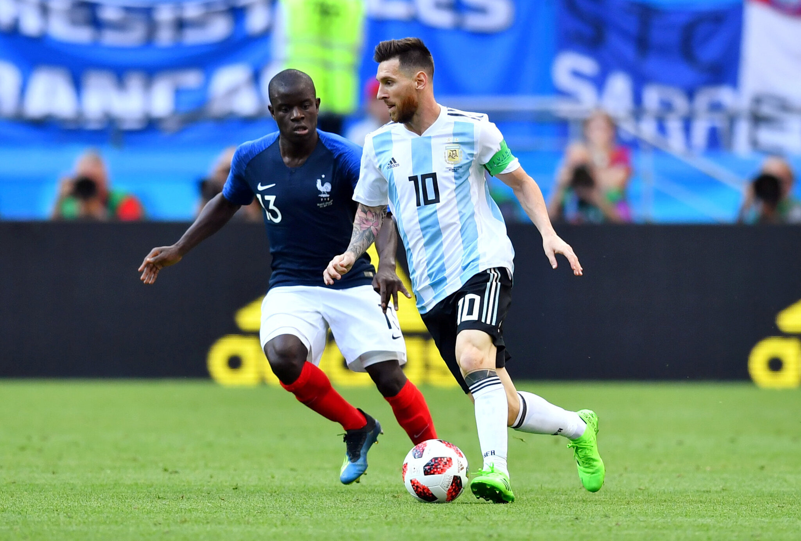
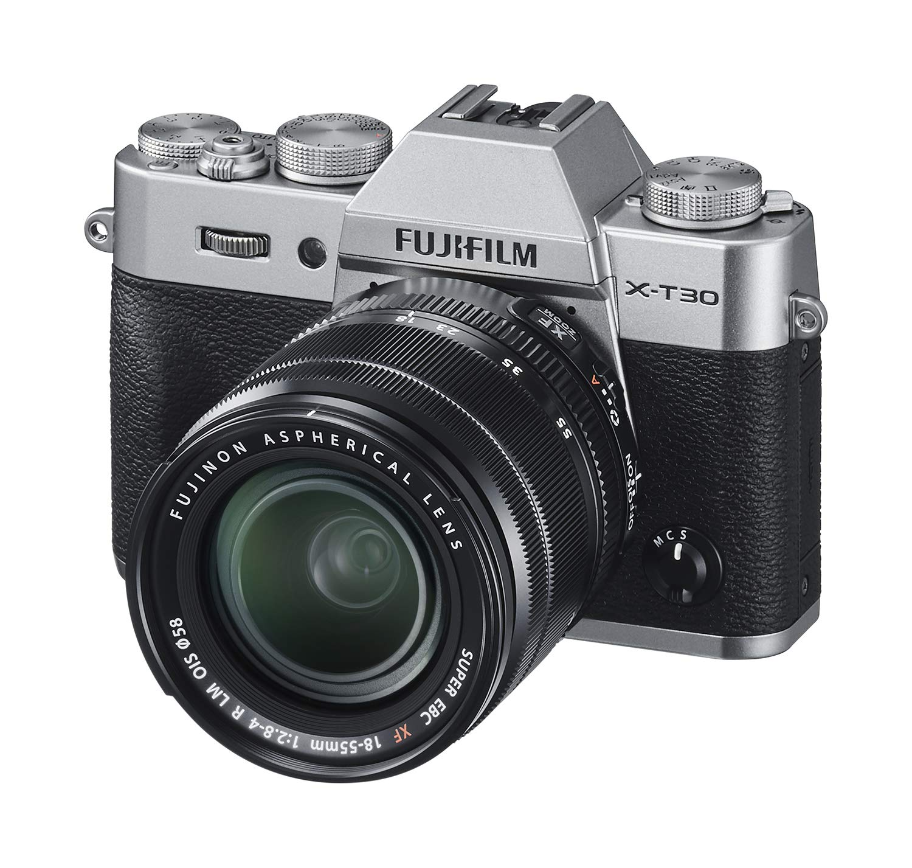

About
One of my favorite passions is soccer, grew up playing it and have not let go of it ever since. My favorite team is Chelsea F.C which are an english team based out of London.

Another passionate thing of mine is photography. There is something about being able to capture life in a still moment that is unbelievably beautiful to me. This is the fujifilm x-t30 which is my current camera of choice.
